Герои Земли
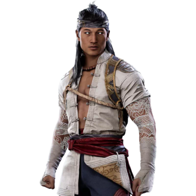
Лю Кан
Огненный бог-защитник, переписал историю вселенной. Главный герой MK1. В новой реальности именно он стал Хранителем Песочных Часов и богом огня, заменив Рейдена.
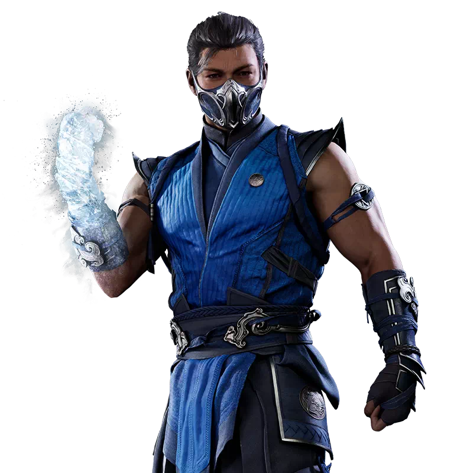
Саб-Зиро (Би-Хан)
Великий Мастер Лин Куэй. Холодный и расчётливый — ледяные кулаки, копья и мечи изо льда. Стал главой клана, который посвятил себя защите Земли.
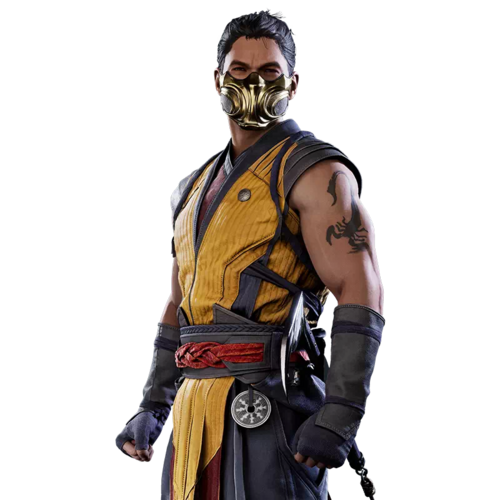
Скорпион (Хасаши Ханзо)
Лидер клана Ширай Рю. Больше не Адский Ниндзя — теперь брат Саб-Зиро. Знаменитые кинжалы на цепях остались при нём.
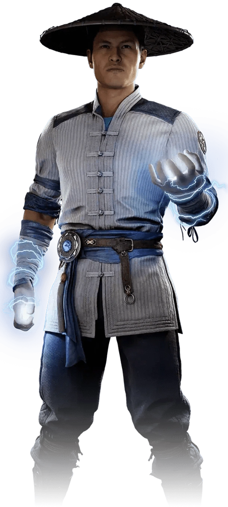
Рейден
В этой реальности — простой фермер из деревни Феньянь, а не бог грома. Но молнии всё так же подчиняются ему в бою.
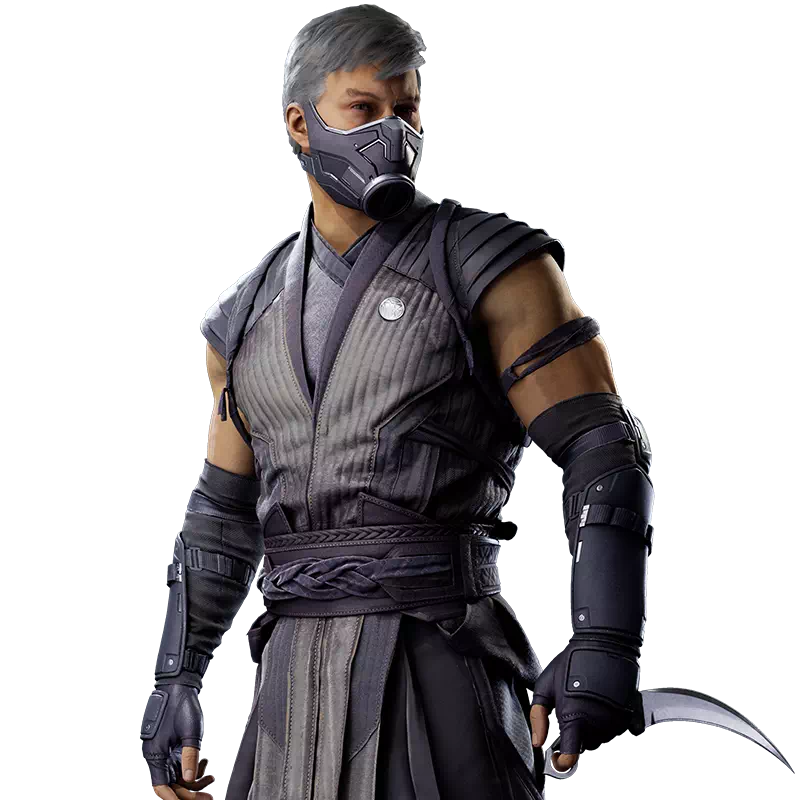
Смоук (Томаш Врбада)
Приёмный сын прежнего главы Лин Куэй, названный брат Саб-Зиро и Скорпиона. Дымовые атаки и скрытность — его конёк.
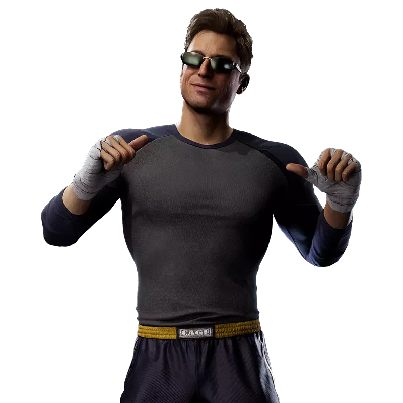
Джонни Кейдж
Голливудский актёр и боец. Харизматичный балагур с нуль-энергией. Его навыки боевых искусств часто ставятся под сомнение из-за кино — он всегда готов доказать обратное.
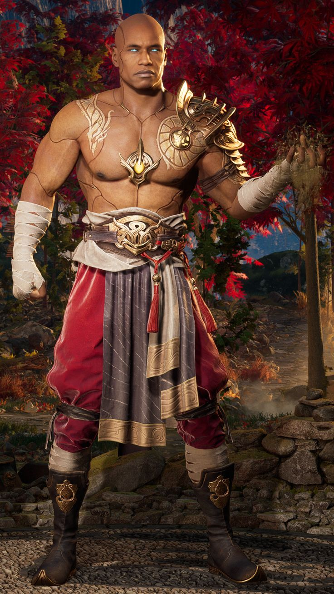
Гарос
Страж Песочных Часов из Нетер Царства — Камео-файтер. Создан Лю Каном, видит все временные линии и следит за их сохранностью.
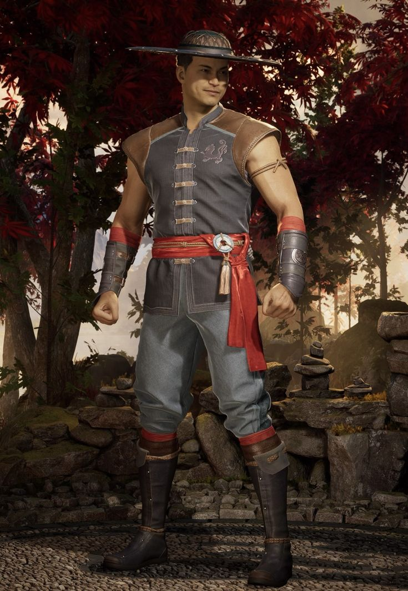
Кун Лао
Монах Белого Лотоса, кузен Лю Кана. Смертоносная бритвенная шляпа — его фирменное оружие. Жаждет славы и проявить себя в каждой схватке.
Воины Внешнего мира
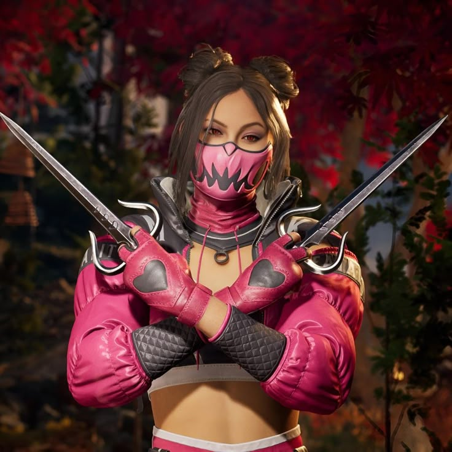
Милина
Дочь Шао, принцесса и правительница Аутерворлда. Импульсивна и воинственна. Скрывает заражение чумой Таркат под маской — если правда раскроется, её власть рухнет.
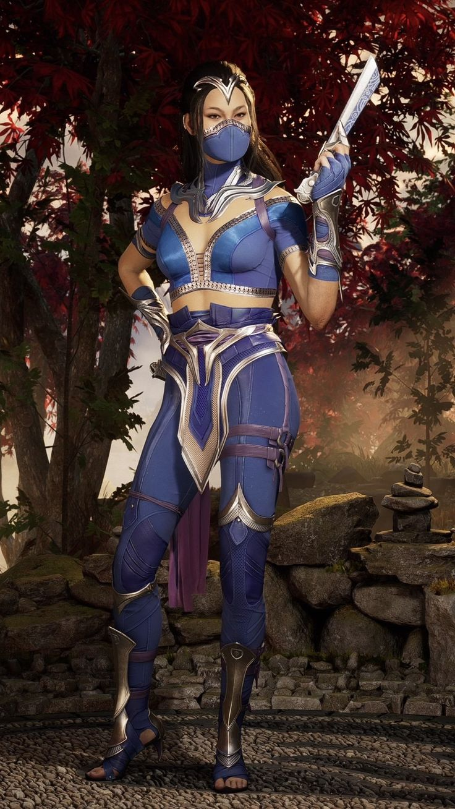
Китана
Принцесса Аутерворлда, возлюбленная Лю Кана. Стальные веера — смертоносное оружие с десятком острых лезвий. Рассудительна и миролюбива, в отличие от сестры.
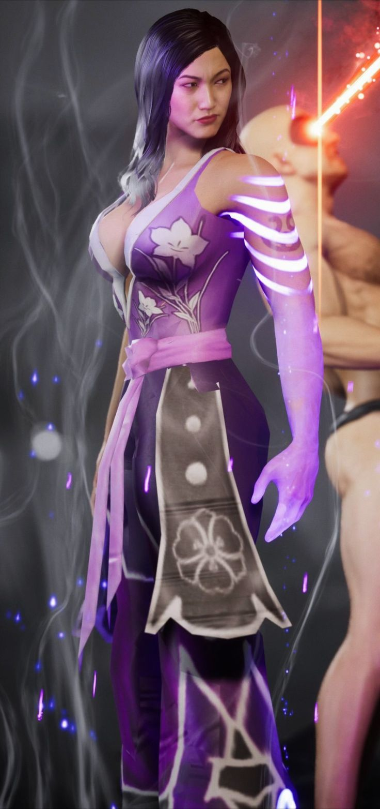
Ли Мэй
Генерал армии Аутворлда, Первый Констебль Сан До. Сильная и принципиальная — была несправедливо изгнана из королевской стражи, но не сломалась.
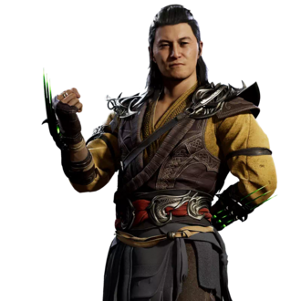
Шэнг Цунг
Коварный чародей, похититель душ. Главный антагонист. Первый среди легендарных злодеев — именно он разрушает хрупкий баланс новой эры Лю Кана.
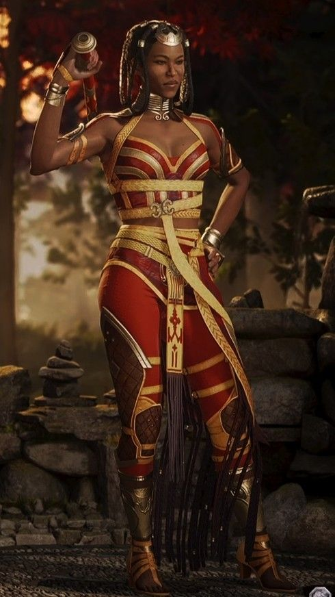
Тань Джу (Таня)
Элитный боец Королевской стражи Умгади. Абсолютная верность правителям Внешнего мира. С Милиной у неё особая тесная связь.
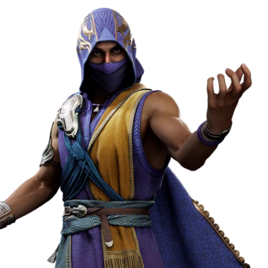
Рейн
Полубог воды. Амбициозный и предательский — всегда выбирает сторону, выгодную лично ему. Бьёт врага потоками воды и затягивает в водовороты посохом.
Идущие своим путём
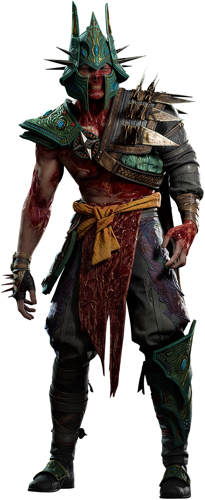
Хавик (Havik)
Верховный жрец Хаоса из Чайной Земли. Фанатичный и непредсказуемый — его цель разрушить любой порядок, включая новую реальность Лю Кана.
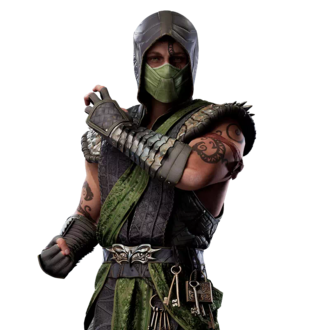
Рептилия (Reptile)
Уроженец Затерры, телохранитель Милины. Способен принимать облик человека, плеваться кислотой. Изгнан своими сородичами — ищет новый дом.
Кенши (Kenshi)
Слепой самурай с телекинетическим мечом Сентинель. Один из центральных персонажей сюжета. Одержим восстановлением чести своей фамилии.
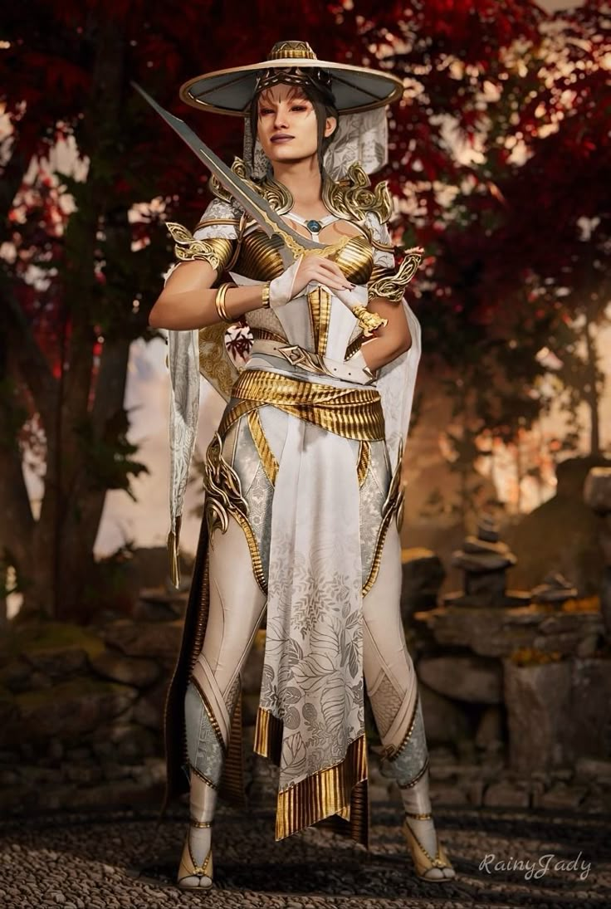
Эшра (Ashrah)
Демоница из Неизведанного, стремится к искуплению через убийство зла. Её путь очищения ведёт её сквозь кровопролитие к свету.
Звёзды Голливуда
Омни-Мэн
Гостевой персонаж из вселенной Invincible (Amazon). Настоящее имя — Нолан Грейсон, Вильтрумит. Сильнее Супермена, летит быстрее пули. Озвучен Дж. К. Симмонсом — один из самых жестоких персонажей в игре.
Хоумлендер (Homelander)
Гостевой персонаж из сериала The Boys (Amazon). Внешне — патриот и кумир миллионов, внутри — социопат. Лазерное зрение, сверхсила, полёт. Озвучен Энтони Старром.
Конан-Варвар
Легендарный воин из Киммерии с огромным мечом. Грубая сила, варварские добивания — никакой магии, только сталь. Визуально напоминает образ Шварценеггера из фильма 1982 года.

Призрачное Лицо (Ghostface)
Гостевой персонаж из хоррор-франшизы Scream. Нож, ловушки и психологические уловки. Несколько костюмов отсылают к разным убийцам из серии фильмов.
T-1000
Из «Терминатора 2: Судный день» (1991). Полиморфный боевой робот из жидкого металла. Превращает конечности в клинки и крюки. Один из самых желанных гостей за всю историю серии.